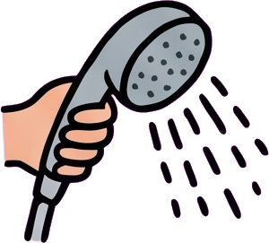
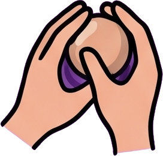
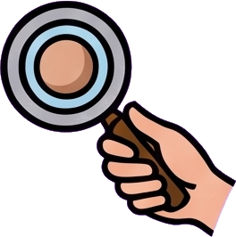
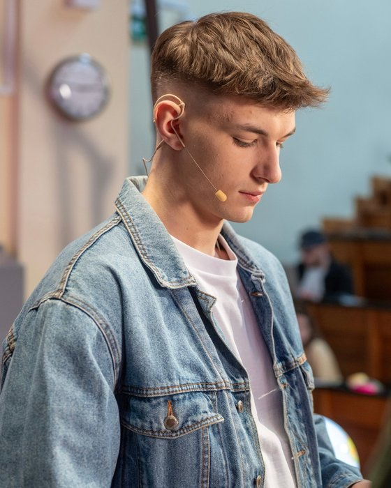
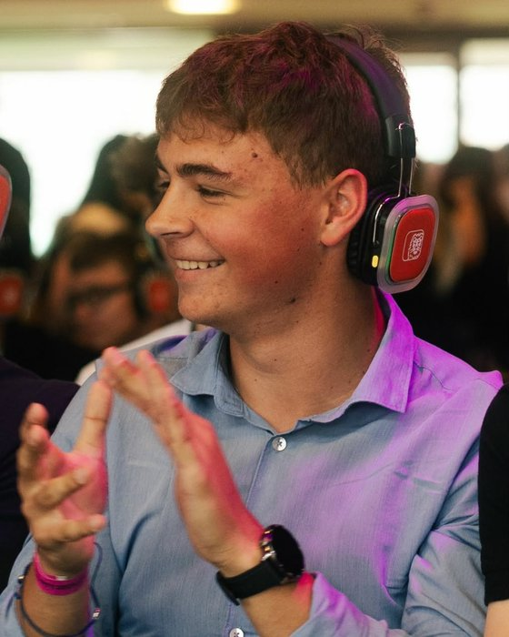
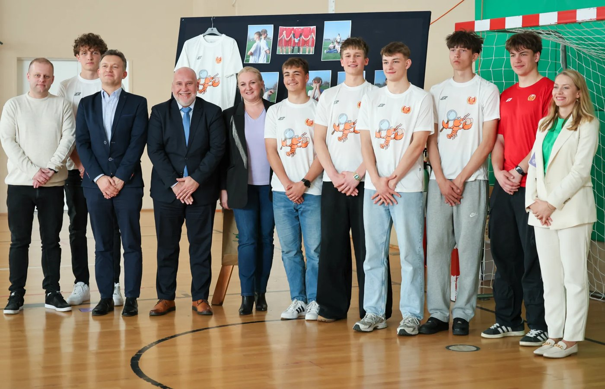
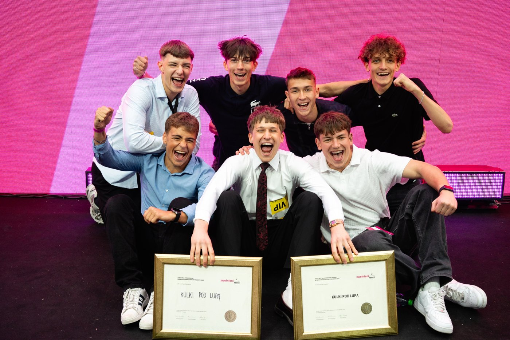

Prowadzimy kampanię o profilaktyce raka jądra – od młodych dla młodych. Zaproś nas do swojej szkoły lub firmy, żeby porozmawiać o tym rzeczowo, bez żenady.
„Kulki pod lupą” to kampania społeczna o profilaktyce raka jądra, prowadzona przez młodych dla młodych. Przyjeżdżamy do szkół i miejsc pracy, żeby o tym rozmawiać i nauczyć, jak się badać.
Rówieśnicza rozmowa o raku jądra: kogo dotyczy, jakie są objawy i dlaczego nie ma się czego wstydzić.
Samobadanie krok po kroku: jak, kiedy i co robić, gdy coś niepokoi. Dwie minuty raz w miesiącu.
Materiały po spotkaniu oraz kanały kampanii w mediach społecznościowych, żeby temat wracał.
Wybierz jeden dzień w miesiącu i zrób szybki przegląd. Najlepiej zadziała to w cieple, podczas kąpieli.

Ciepła woda to Twój sprzymierzeniec. Sprawia, że skóra moszny maksymalnie się rozluźnia, dzięki czemu badanie jest dużo łatwiejsze i dokładniejsze.

Chwyć jedną kulkę obiema rękami: między kciuki a palce wskazujące i środkowe. Delikatnie, powoli obracaj ją w palcach. Przebadaj dokładnie całą powierzchnię, a potem zrób to samo z drugą.

Bądź czujny na wszystko, co nowe lub nietypowe: twarde guzki (nawet wielkości ziarenka grochu), zgrubienia, opuchliznę, nagłą zmianę rozmiaru lub dziwne uczucie ciężaru.
Instrukcja z materiałów kampanii. [Przegląd merytoryczny: imię i nazwisko lekarza]
Wyczułeś pod palcami coś nowego, guzek albo zgrubienie? Bez paniki. Zdecydowana większość takich zmian to nie rak, tylko niegroźne torbiele, żylaki czy stany zapalne. Ale nie ma co zgadywać, trzeba to po prostu sprawdzić. Oto szybki plan krok po kroku.
To podstawa. Badanie jest całkowicie bezbolesne, a wynik dostajesz od razu.
Z gotowym wynikiem USG zgłoś się do urologa, bo to lekarz od tych spraw. Oceni badanie i powie, co robić dalej. Bardzo często usłyszysz, że wszystko jest w porządku.
Rak jąder wykryty odpowiednio wcześnie jest w większości przypadków w pełni uleczalny. Strach jest normalny, ale nie zwlekaj. Zbadaj to i miej święty spokój.
Język dopasowany do wieku, rówieśnicza forma i spokojna atmosfera. Idealne na lekcje wychowawcze, godziny zdrowia i dni profilaktyki.
Krótkie spotkanie w ramach dnia zdrowia, Niebieskiego Listopada lub integracji zespołu. Bez patosu, z konkretną wiedzą.
Krótki formularz: kim jesteście, ile osób, jaki format Was interesuje.
Odpowiadamy w ciągu 3 dni roboczych i razem dobieramy termin, długość i formę.
Prowadzimy spotkanie, a po nim zostawiamy materiały do samodzielnej nauki.
„Kulki pod lupą” zaczęły się w szkolnej ławce i na boisku. Z naszego licealnego projektu w Pruszkowie wyrosła kampania, która dostała dwa Złote Wilki i trafiła do Senatu. Dziś rozwijamy ją dalej w szkołach i firmach.
Zaczęliśmy w roku szkolnym 2024/25 w Szkole Mistrzostwa Sportowego w Pruszkowie. Było nas siedmiu, a na co dzień gramy w piłkę w Akademii MKS Znicz Pruszków. W ramach XI edycji Olimpiady Zwolnieni z Teorii realizowaliśmy projekt społeczny. To olimpiada, w której młodzi sami wymyślają i wdrażają działania odpowiadające na realny problem.
Wybraliśmy temat, który dotyczy naszych rówieśników, a o którym rzadko się rozmawia: raka jądra, jednego z najczęstszych nowotworów u młodych mężczyzn. Jako sportowcy wiemy, że zdrowie to dla nas sprawa szczególnie ważna, więc postanowiliśmy przełamać tabu i uczyć się badać razem z kolegami.
Jeden za cały projekt (kategoria „wydarzenie publiczne”), drugi za naszą prezentację w Pitch Contest. Na finale XI edycji olimpiady na Stadionie Legii Warszawa w 2025 r.
Byliśmy jednym z 20 najlepszych projektów w Polsce i dostaliśmy zaproszenie do współpracy z mentorami JP Morgan Chase przy prezentacji i kolejnych krokach.
Zabraliśmy głos na debacie o zdrowiu w Senacie. O naszym projekcie wspomniała też wiceministra edukacji Katarzyna Lubnauer w wywiadzie dla WP (październik 2025).
Tyle projektów zrealizowało w XI edycji olimpiady 9306 młodych osób. Nasz znalazł się wśród wyróżnionych.
Źródła: Miasto Pruszków · Znicz Pruszków · wPruszkowie · WPR24 · Polityka Zdrowotna · WP
Część zespołu poszła swoją drogą, a my, dwóch współtwórców, postanowiliśmy działać dalej. Za zgodą reszty grupy rozwijamy kampanię pod tą samą nazwą i z tą samą maskotką, żeby dotrzeć do kolejnych szkół i miejsc pracy.

Zająłem się tym tematem, bo rak jądra wciąż jest tabu, a dotyczy właśnie nas, młodych mężczyzn. W zespole montuję materiały do mediów społecznościowych i współprowadzę warsztaty na żywo.

Uważam, że dbanie o zdrowie nie musi być skomplikowane, wystarczy wyrobić sobie kilka dobrych nawyków. Chcę o tym mówić prostym, żywym językiem, który naprawdę trafia do ludzi. W zespole odpowiadam za komunikację zewnętrzną i współprowadzę warsztaty na żywo.


Najważniejsze fakty w trzech zdaniach.
Rak jądra najczęściej rozpoznaje się u mężczyzn przed 40. rokiem życia.
Samobadanie jąder jest szybkie i proste. Najlepiej robić je raz w miesiącu, w cieple, np. podczas kąpieli.
Każdy niepokojący guzek lub zmiana to powód, by zgłosić się do lekarza lub urologa.
Treści mają charakter edukacyjny i nie zastępują konsultacji lekarskiej. Źródła: NFZ, pacjent.gov.pl. [Przegląd merytoryczny: imię i nazwisko lekarza]
Rzeczowo, spokojnie i bez żenady. Język dopasowujemy do wieku grupy, a pytania można zadawać anonimowo.
Tak, i bardzo nas to cieszy. Choć mówimy o męskim zdrowiu, kobiety odgrywają w nim ogromną rolę. Z naszego doświadczenia to często partnerki, siostry i przyjaciółki jako pierwsze namawiają mężczyzn do wizyty u lekarza, gdy ci bagatelizują problem. Wiedza, którą przekazujemy, jest uniwersalna: uczy, jak dbać o zdrowie bliskich i jak rozmawiać o profilaktyce bez wstydu.
Cena zależy od Twoich potrzeb: liczby grup, formy zajęć i miejsca. Umów się z nami na niezobowiązującą rozmowę, a wspólnie dogramy szczegóły.
[ODPOWIEDŹ: obszar działania, wersja online]
[ODPOWIEDŹ: ustalana ze szkołą, wzór informacji do pobrania]
Sali, rzutnika i ekranu oraz [DO USTALENIA]. Resztę przywozimy ze sobą.
Wypełnij formularz, a odpiszemy w ciągu 3 dni roboczych.